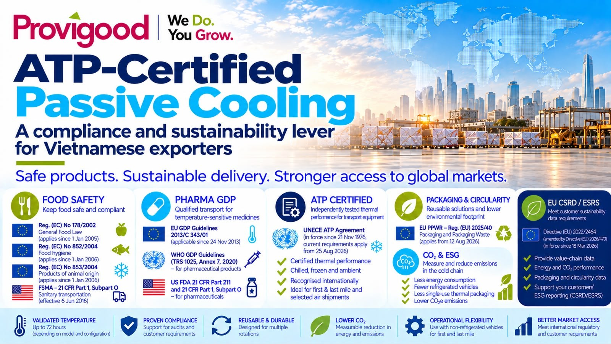

Comment les solutions de froid passif peuvent appuyer les exigences de sécurité alimentaire, de BPD pharmaceutiques, d'ATP, d'emballage et d'ESG.
Pour les exportateurs vietnamiens de produits alimentaires, pharmaceutiques et autres produits thermosensibles, la conformité ne se limite plus au produit lui-même. Le processus de transport doit lui aussi démontrer que les marchandises sensibles à la température ont été manipulées dans des conditions maîtrisées et documentées.
C'est là que les solutions de froid passif certifiées ATP peuvent créer de la valeur. Plutôt que de remplacer chaque véhicule frigorifique, des solutions comme les conteneurs isothermes Olivo offrent un environnement thermique validé et traçable pour certaines opérations de premier et de dernier kilomètre et, lorsque le profil validé le permet, pour certaines expéditions aériennes.
Du froid passif à la conformité par la preuve. L'objectif n'est pas de prétendre qu'un conteneur isotherme rend une entreprise « conforme HACCP », « conforme BPD » ou « conforme ESG ». La valeur est plus précise : une solution de transport qualifiée et documentée apporte des preuves techniques qui viennent étayer un système existant de sécurité alimentaire, de qualité pharmaceutique, d'audit client ou de durabilité.

1. Droit alimentaire européen : traçabilité et transport maîtrisé
Le règlement (CE) n° 178/2002 établit les principes généraux de la législation alimentaire européenne et impose la traçabilité tout au long de la chaîne alimentaire. Pour les exportateurs qui approvisionnent l'Union européenne, pouvoir documenter où les produits ont été manipulés et dans quelles conditions est donc fondamental.
Les conteneurs Olivo peuvent appuyer cette chaîne de preuves grâce à un transport thermique maîtrisé et, sur certains modèles, à un suivi optionnel de la température et de la position GPS. Leur rôle reste un rôle d'appui : l'exportateur demeure responsable de l'ensemble de son système de sécurité alimentaire et de traçabilité.
2. Hygiène alimentaire européenne : HACCP et maîtrise des températures
Le règlement (CE) n° 852/2004 relatif à l'hygiène des denrées alimentaires impose aux exploitants du secteur alimentaire d'appliquer des procédures fondées sur les principes HACCP et de garantir des conditions appropriées pendant le transport. Pour les produits thermosensibles, la configuration de transport fait donc partie intégrante du système de maîtrise.
Une configuration de froid passif validée peut aider un exportateur à démontrer comment la température est maintenue pendant des étapes de transport définies, en particulier lors de la collecte au premier kilomètre, du transbordement (cross-docking) et de la livraison du dernier kilomètre.
3. Produits d'origine animale et produits de la pêche
Le règlement (CE) n° 853/2004 fixe des exigences de température spécifiques pour les produits d'origine animale. Pour les produits de la pêche congelés, la règle générale est une température du produit ne dépassant pas −18 °C, sous réserve de la brève fluctuation vers le haut autorisée par le règlement.
La performance thermique est donc particulièrement importante pour les exportateurs vietnamiens de produits de la mer. La configuration Olivo retenue doit être sélectionnée et validée en fonction du produit, de la température cible, des conditions ambiantes, du mode de chargement et de la durée prévue.
4. États-Unis : le transport sanitaire selon la FSMA
Dans le cadre de la loi américaine sur la modernisation de la sécurité alimentaire (FSMA), la règle sur le transport sanitaire des aliments destinés à la consommation humaine et animale (21 CFR partie 1, sous-partie O) établit des exigences destinées à empêcher que les aliments ne deviennent impropres pendant le transport.
Pour les exportateurs qui expédient vers les États-Unis, des procédures de transport maîtrisées et des équipements adaptés sont donc pertinents. Le froid passif peut constituer l'un des éléments d'une stratégie documentée de maîtrise du transport, dès lors que la configuration convient au produit et au trajet.
5. Distribution pharmaceutique : BPD européennes et recommandations de l'OMS
Les lignes directrices européennes relatives aux bonnes pratiques de distribution (BPD) des médicaments à usage humain (2013/C 343/01) exigent que les conditions de stockage et de transport soient maintenues et évaluées au regard des risques. Elles reconnaissent explicitement les emballages thermiques qualifiés, les conteneurs et véhicules à température contrôlée, ainsi que le suivi des températures et l'évaluation des risques liés à l'itinéraire.
Les recommandations de l'OMS, dont la série de rapports techniques n° 1025, annexe 7, renforcent l'importance des bonnes pratiques de stockage et de distribution, de la qualification et du suivi pour les produits médicaux. Pour la fabrication et la distribution pharmaceutiques aux États-Unis, le 21 CFR 211.150 impose également des procédures écrites de distribution et de contrôle des médicaments.
Pour les exportateurs, la leçon pratique est claire : le froid passif peut faire partie d'une solution d'expédition qualifiée, mais la qualification doit être rattachée au produit réel, à la configuration d'emballage, à l'itinéraire et au profil de température.
6. L'accord ATP de la CEE-ONU : le lien réglementaire le plus direct
L'accord de la CEE-ONU relatif aux transports internationaux de denrées périssables (ATP) est la référence réglementaire la plus directe pour les équipements de transport isothermes. L'ATP définit les exigences et les procédures d'essai applicables aux engins spéciaux utilisés pour le transport des denrées périssables.
C'est particulièrement pertinent pour Olivo, dont certaines solutions de froid passif sont certifiées ATP. L'ATP fournit ainsi une référence directe de performance de l'équipement, tandis que les réglementations alimentaires ou pharmaceutiques définissent les exigences plus larges relatives au produit et à la distribution.
7. Règlement européen sur les emballages et les déchets d'emballages (PPWR)
Le règlement (UE) 2025/40 relatif aux emballages et aux déchets d'emballages est entré en vigueur le 11 février 2025 et s'applique à compter du 12 août 2026. Il renforce l'accent mis par l'Union européenne sur la prévention des déchets d'emballages, le réemploi et la circularité.
Les solutions de transport isothermes réutilisables peuvent soutenir une stratégie d'emballages réemployables en remplaçant certains matériaux de transport à usage unique et en permettant des rotations répétées. La qualification juridique précise et l'applicabilité des exigences du PPWR dépendent de la configuration d'emballage et de son utilisation dans la chaîne d'approvisionnement.
8. CSRD / ESRS : preuves de durabilité et pression des clients
La directive européenne sur le reporting de durabilité des entreprises (CSRD), telle que modifiée en 2026 par la directive (UE) 2026/470, a désormais un périmètre obligatoire plus restreint. Dans le cadre révisé, le reporting obligatoire s'applique en général aux entreprises dont le chiffre d'affaires net dépasse 450 millions d'euros et qui emploient plus de 1 000 personnes en moyenne, sous réserve des conditions détaillées de la directive.
La plupart des exportateurs vietnamiens ne seront donc pas directement soumis à la CSRD. Mais la CSRD et les normes européennes d'information en matière de durabilité (ESRS) peuvent tout de même compter commercialement, via les clients, les maisons mères, les exigences des achats et les demandes de données sur la chaîne de valeur. Le cadre révisé introduit aussi des garde-fous sur les demandes d'informations le long de la chaîne de valeur et une norme volontaire de reporting de durabilité pour les petites entreprises.
Pour les exportateurs, l'opportunité consiste à produire des preuves opérationnelles fiables : consommation d'énergie du transport, réfrigération évitée, rotations des conteneurs réutilisables, réduction des emballages et, lorsqu'elles sont correctement calculées, les données d'émissions associées. Olivo peut contribuer à cette base de preuves opérationnelles, mais ne rend pas, à lui seul, une entreprise « conforme ESG ».
9. Règlement européen sur les gaz fluorés : un levier de durabilité indirect
Le règlement (UE) 2024/573 renforce le cadre européen applicable aux gaz à effet de serre fluorés et introduit de nouvelles restrictions sur certains fluides frigorigènes à fort potentiel de réchauffement (PRG) et sur les équipements concernés.
Le froid passif n'utilise ni compresseur ni circuit frigorigène pendant le transport. Dans le bon modèle d'exploitation, il peut donc réduire le recours au transport frigorifique mécanique sur certains tronçons. Il s'agit d'un bénéfice de durabilité indirect, et non d'une conformité directe au règlement sur les gaz fluorés.
Où Olivo peut créer de la valeur réglementaire
Référentiel par référentiel, l'enjeu principal et la contribution possible d'Olivo :
- UE 178/2002 (traçabilité) : preuves d'un transport maîtrisé ; suivi optionnel de la température et de la position GPS.
- UE 852/2004 (hygiène, maîtrise fondée sur l'HACCP) : appui aux procédures documentées de maîtrise des températures.
- UE 853/2004 (températures des produits d'origine animale et de la pêche) : configuration thermique validée pour des profils de température définis.
- FSMA américaine, 21 CFR partie 1, sous-partie O (transport sanitaire) : solution de transport maîtrisée au sein d'un processus documenté.
- BPD européennes 2013/C 343/01 (distribution des médicaments) : emballages et conteneurs thermiques qualifiés, suivi et preuves d'évaluation des risques d'itinéraire.
- OMS TRS 1025, annexe 7 (distribution des produits médicaux) : appui à la qualification et au suivi.
- ATP de la CEE-ONU (performance thermique des équipements de transport) : pertinence directe grâce aux solutions de froid passif certifiées ATP.
- PPWR 2025/40 (réemploi et déchets d'emballages) : appui aux modèles d'emballages de transport réutilisables et réduction des matériaux à usage unique.
- CSRD / ESRS (données de durabilité, chaîne de valeur) : preuves opérationnelles sur l'énergie, les émissions et les rotations de conteneurs réutilisables.
- Gaz fluorés 2024/573 (fluides frigorigènes, gaz à effet de serre) : réduction possible de la dépendance à la réfrigération mécanique sur certains tronçons.
Du froid passif à la conformité par la preuve
Le meilleur argument n'est pas simplement « nous avons une caisse isotherme ». C'est la capacité à relier une solution de transport qualifiée à des procédures d'exploitation documentées et à des résultats mesurables.
- Définir la plage de température requise et la durée maximale de transport.
- Choisir le conteneur Olivo et la configuration de plaques eutectiques appropriés.
- Valider la configuration au regard du produit, du mode de chargement et de l'itinéraire.
- Documenter les procédures de préparation, de chargement, de remise et de suivi.
- Conserver les données de température et, lorsqu'elles existent, de géolocalisation comme preuves objectives.
- Mesurer les rotations des conteneurs réutilisables, la réfrigération évitée et les impacts opérationnels pertinents.
- Intégrer ces preuves, selon les cas, dans la documentation HACCP, BPD, d'audit client et de durabilité de l'exportateur.
Important : les solutions Olivo ne remplacent ni le système HACCP d'une entreprise, ni sa qualification BPD, ni son système qualité pharmaceutique, ni ses autorisations réglementaires, ni son cadre de reporting ESG. Leur valeur tient à leur statut d'équipement de transport qualifié et de preuve technique à l'appui de ces systèmes.
Provigood — We Do. You Grow. Distributeur agréé d'Olivo Cold Logistics au Vietnam et au Cambodge.
Sources et références
- Commission européenne / EUR-Lex – règlement (CE) n° 178/2002 (législation alimentaire générale).
- Commission européenne / EUR-Lex – règlement (CE) n° 852/2004 (hygiène des denrées alimentaires).
- Commission européenne / EUR-Lex – règlement (CE) n° 853/2004 (produits d'origine animale).
- FDA – Sanitary Transportation of Human and Animal Food, 21 CFR partie 1, sous-partie O.
- Commission européenne / EUR-Lex – lignes directrices BPD 2013/C 343/01.
- OMS – série de rapports techniques n° 1025, annexe 7.
- CEE-ONU – accord ATP.
- Commission européenne / EUR-Lex – règlement (UE) 2025/40 (PPWR).
- Commission européenne / EUR-Lex – directive (UE) 2026/470 (modifications de la CSRD).
- Commission européenne – ESRS révisées, 3 juillet 2026.
- Commission européenne / EUR-Lex – règlement (UE) 2024/573 (gaz fluorés).
- FDA / eCFR – 21 CFR 211.150, procédures de distribution.